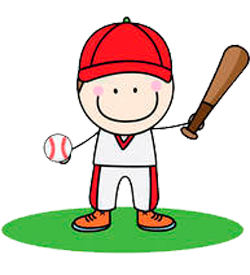

На главную
Бейсбол

Бейсбол - командная спортивная игра с баскетбольным мячом и битой. Родственным бейсболу видам спорта относятся крикет, песаполо в Финляндии, ойна в Румынии и лапта в России. Бейсбол наиболее популярен на Кубе, в США, в Венесуэле, в Японии, Китае и Южной Корее. В США, Японии, Чехии и других странах распространён также софтбол — упрощённый вариант бейсбола — игра, которую можно проводить в помещении и на небольших полях. На данный момент в бейсбол играют более чем в 120 странах мира.